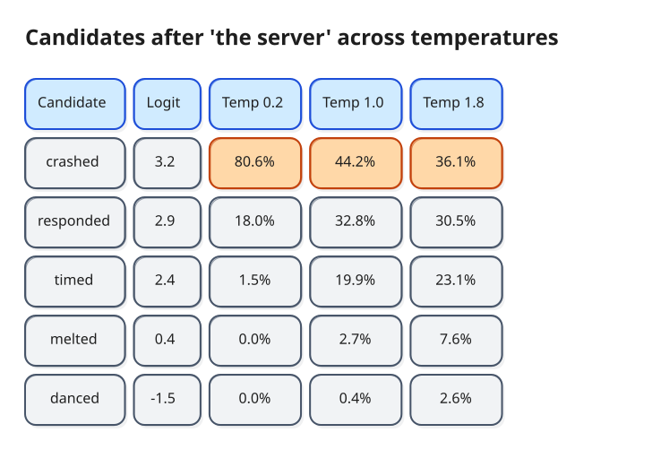

What an LLM actually is
1. Why this matters to you as a builder
The HookAn LLM is a computer program that takes a sequence of text and scores what single piece of text should come next. It exists because human language is too messy for handwritten rules, but predictable enough when compressed into billions of numbers.
- You stop asking it to plan backwards. Because tokens come out left-to-right, asking for a verdict on line one and the reasoning on line ten forces the model to guess a verdict first and rationalize it second.
- You debug non-determinism in seconds. When a test passes four times and fails on the fifth, you know whether sampling temperature or prompt drift caused the branch.
- You stop expecting it to remember yesterday's request. Every call hits frozen weights; if a fact is not in those weights or in your current prompt payload, it does not exist.
2. The everyday version: autocomplete with a whole library compressed inside
Analogy + Fig 1Think of your phone keyboard suggesting three words above the keys. Your phone looks at the last word or two and offers a tiny menu.
A large language model in plain words: a neural network trained on massive text that scores every token in its vocabulary for what comes next. Instead of looking at two words, it looks at your whole prompt at once. Instead of picking from three common words, it scores 100,000+ pieces of text in parallel, picks one, glues that piece onto the end of your input, and runs the exact same loop again.

3. Level 1: The six terms you actually need
VocabularyBefore we trace the arithmetic, let's lock in the vocabulary without circular definitions.
- next-token prediction in plain words: the core task of guessing the single next piece of text given all previous pieces.
- parameters in plain words: the adjustable numeric dials inside the model that determine how input text turns into output scores.
- weights in plain words: the exact numbers stored in those parameters after training finishes (a 7B model is literally a file holding seven billion floating-point numbers).
- training in plain words: the expensive upfront process of showing the model trillions of text examples and nudging its weights whenever it guesses the next token poorly.
- inference in plain words: running the finished, frozen model on your prompt to generate new tokens without changing any weights.

4. Level 2: How one answer is actually built
The MechanismWhen you send the server to an LLM, four concrete steps happen inside one tick of the loop:
- Forward pass produces raw logits. Your tokens flow through the frozen weights. At the very end, the model outputs one raw, unnormalized number for every entry in its vocabulary. We call these logits in plain words: raw scores the model assigns to each possible next token before turning them into percentages.
- Temperature scales the gap between scores. We divide every logit by temperature in plain words: a dial that controls how sharply the highest-scoring tokens dominate the probability list. In our lab,
crashedhas logit3.2andrespondedhas2.9. - Softmax turns scores into probabilities. We exponentiate the scaled logits and divide by their sum (softmax in plain words: a math step that converts any list of raw numbers into positive probabilities that add up to 100%). At temperature
0.2,crashedtakes80.6%of the probability mass. At temperature1.0,crasheddrops to44.2%andrespondedgets32.8%. - Sample one token and append. The sampler rolls a weighted die. If it picks
responded, the new input becomesthe server responded, and the whole machine runs again for token four.

5. Level 3: Pro mode — what this rules out in production
Tradeoffs & Failure ModesUnderstanding that an LLM is strictly a forward-only next-token predictor immediately explains three failure modes that burn engineering teams:
- The early-token trap (snowballing hallucinations). If you ask
'Answer YES or NO first, then explain why', and at temperature1.0the sampler rolls a 20% token (YES), every subsequent pass seesYESin its prompt context. The model's job is to predict likely text followingYES, so it invents an argument forYESeven when the facts point toNO. Fix: always ask the model to reason before emitting the final verdict token. - No built-in scratchpad between tokens. The model does the same fixed amount of arithmetic per token whether the next word is
'the'or the answer to a 5-digit multiplication. If a calculation requires ten intermediate steps, those steps must be written out as visible tokens in the context. - Temperature 0 is greedy, not 'more factual'. Setting temperature to
0.0(greedy decoding in plain words: always picking the single highest-probability token at every step) makes runs repeatable (1 / 5unique outputs in our lab), but if the highest-probability phrase is a common misconception, greedy decoding will repeat that misconception 100% of the time.
Jargon Decoder
Hands-On Lab: Build the 40-line next-token predictor & diff 5 runs across temperatures
See with your own eyes how raw logits turn into probabilities under temperature 0.2, 1.0, and 1.8, and why temperature 0.0 produces 1 unique output across 5 runs while temperature 1.0 produces 5 distinct trajectories.
=== STEP 1: Raw logits vs probabilities after (the server) ===
Temp 0.2 -> crashed: 80.6%, responded: 18.0%, timed: 1.5%, melted: 0.0%, danced: 0.0%
Temp 1.0 -> crashed: 44.2%, responded: 32.8%, timed: 19.9%, melted: 2.7%, danced: 0.4%
Temp 1.8 -> crashed: 36.1%, responded: 30.5%, timed: 23.1%, melted: 7.6%, danced: 2.6%
=== STEP 2: 5 runs at temperature = 0.0 (Greedy decoding) ===
Run 1: the server crashed because memory ran stopped
Run 2: the server crashed because memory ran stopped
Run 3: the server crashed because memory ran stopped
Run 4: the server crashed because memory ran stopped
Run 5: the server crashed because memory ran stopped
Unique outputs at temp 0.0: 1 / 5
=== STEP 3: 5 runs at temperature = 1.0 (Sampling from the distribution) ===
Run 1: the server responded in twelve milliseconds stopped
Run 2: the server crashed because memory leaked stopped
Run 3: the server timed out after five recovered
Run 4: the server responded in forty stopped and
Run 5: the server timed out after thirty recovered
Unique outputs at temp 1.0: 5 / 5"""Tiny, pure-Python next-token prediction lab for Module l0-what-is-an-llm.
Shows what an LLM actually does at every step:
1. Takes the current token sequence (context).
2. Produces raw scores (logits) over its vocabulary.
3. Scales logits by temperature and runs softmax to get a probability distribution.
4. Samples one next token, appends it to the prompt, and repeats.
Zero external dependencies (Python 3 stdlib only) so any developer can run it immediately.
"""
from __future__ import annotations
import math
import random
# A tiny toy vocabulary and pre-trained logit table conditioned on the last two words.
# In a real 70B LLM, these logits come from 80 transformer layers multiplying billions of weights.
# Here we inspect the exact output stage of that pipeline: logits -> softmax -> sample -> append.
LOGIT_TABLE: dict[tuple[str, str], dict[str, float]] = {
("the", "server"): {"crashed": 3.2, "responded": 2.9, "timed": 2.4, "melted": 0.4, "danced": -1.5},
("server", "crashed"): {"because": 3.6, "after": 2.5, "at": 1.8, "quietly": 0.9},
("server", "responded"): {"in": 3.4, "with": 2.8, "after": 1.7, "slowly": 1.1},
("server", "timed"): {"out": 4.5, "at": 1.1, "twice": 0.8},
("crashed", "because"): {"memory": 3.3, "traffic": 2.9, "disk": 2.1, "aliens": -2.0},
("crashed", "after"): {"ten": 3.0, "heavy": 2.7, "midnight": 2.0},
("responded", "in"): {"twelve": 3.1, "two": 2.8, "forty": 2.2},
("responded", "with"): {"valid": 3.2, "stale": 2.6, "empty": 2.1},
("timed", "out"): {"after": 3.5, "during": 2.7, "under": 2.2},
("because", "memory"): {"ran": 3.8, "leaked": 3.1, "spiked": 2.4},
("because", "traffic"): {"doubled": 3.5, "spiked": 3.2, "surged": 2.5},
("after", "ten"): {"seconds": 3.9, "requests": 2.8, "retries": 2.3},
("in", "twelve"): {"milliseconds": 4.2, "seconds": 2.1},
("with", "valid"): {"json": 3.9, "headers": 2.6, "bytes": 2.0},
("out", "after"): {"thirty": 3.4, "five": 3.0, "three": 2.4},
}
DEFAULT_LOGITS: dict[str, float] = {"and": 2.2, "then": 2.0, "stopped": 2.6, "recovered": 2.3}
def softmax(logits: dict[str, float], temperature: float) -> dict[str, float]:
"""Turn raw logit scores into probabilities that sum to 1.0."""
if temperature <= 0:
# Greedy decoding: 100% probability on the single highest logit
best_token = max(logits.items(), key=lambda kv: kv[1])[0]
return {k: (1.0 if k == best_token else 0.0) for k in logits}
scaled = {k: v / temperature for k, v in logits.items()}
max_logit = max(scaled.values())
exps = {k: math.exp(v - max_logit) for k, v in scaled.items()}
total = sum(exps.values())
return {k: v / total for k, v in exps.items()}
def sample_token(probs: dict[str, float], rng: random.Random) -> str:
"""Pick one token according to its probability mass."""
r = rng.random()
cumulative = 0.0
for token, p in probs.items():
cumulative += p
if r <= cumulative:
return token
return list(probs.keys())[-1]
def generate(prompt: list[str], steps: int, temperature: float, rng: random.Random) -> list[str]:
"""Autoregressive loop: predict one token, append to context, repeat."""
tokens = list(prompt)
for _ in range(steps):
context_key = (tokens[-2], tokens[-1])
logits = LOGIT_TABLE.get(context_key, DEFAULT_LOGITS)
probs = softmax(logits, temperature=temperature)
next_tok = sample_token(probs, rng)
tokens.append(next_tok)
return tokens
def main() -> None:
prompt = ["the", "server"]
first_logits = LOGIT_TABLE[("the", "server")]
print("=== STEP 1: Raw logits vs probabilities after (" + " ".join(prompt) + ") ===")
for temp in (0.2, 1.0, 1.8):
probs = softmax(first_logits, temperature=temp)
top_str = ", ".join(f"{tok}: {p*100:5.1f}%" for tok, p in sorted(probs.items(), key=lambda x: -x[1]))
print(f"Temp {temp:3.1f} -> {top_str}")
print("\n=== STEP 2: 5 runs at temperature = 0.0 (Greedy decoding) ===")
greedy_runs = set()
for i in range(5):
rng = random.Random(100 + i)
out = " ".join(generate(prompt, steps=5, temperature=0.0, rng=rng))
greedy_runs.add(out)
print(f" Run {i+1}: {out}")
print(f"Unique outputs at temp 0.0: {len(greedy_runs)} / 5")
print("\n=== STEP 3: 5 runs at temperature = 1.0 (Sampling from the distribution) ===")
sampled_runs = set()
for i in range(5):
rng = random.Random(42 + i * 7)
out = " ".join(generate(prompt, steps=5, temperature=1.0, rng=rng))
sampled_runs.add(out)
print(f" Run {i+1}: {out}")
print(f"Unique outputs at temp 1.0: {len(sampled_runs)} / 5")
if __name__ == "__main__":
main()